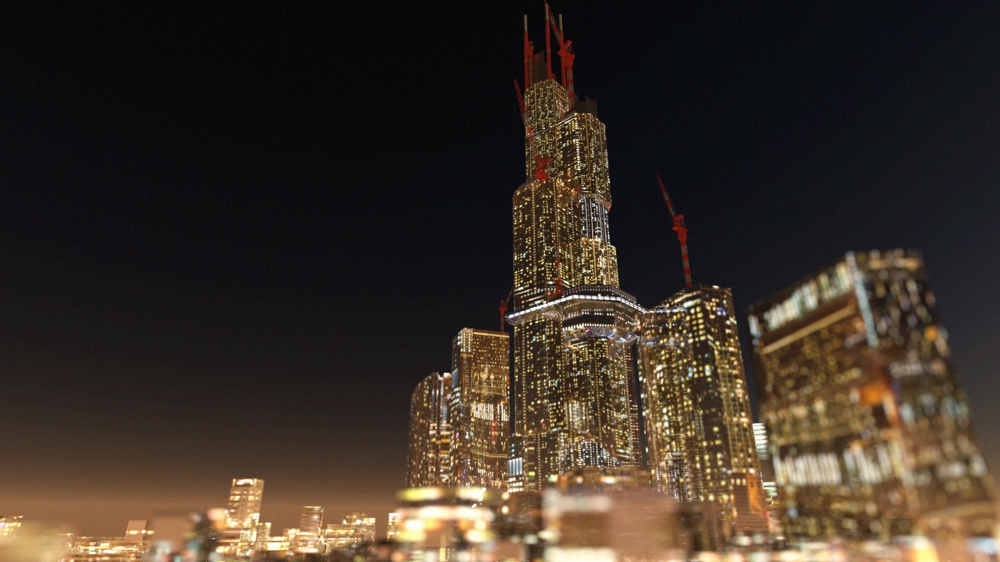
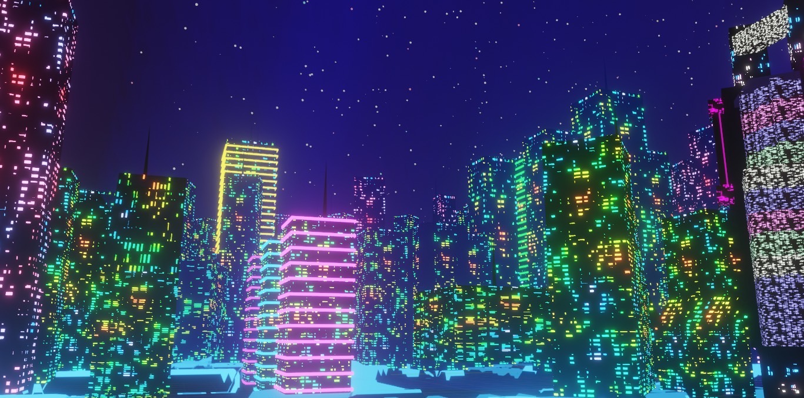

バランスアクション!VR

バランスアクション!VRは150th開成祭の有志参団です。
VRと教室内に作られたトロッコ装置などを利用して遺跡の中をジェットコースターのように駆け抜けるGOGOVRと
高所で綱渡りのような体験をすることが出来るスパイ体験、これら二つの企画を用意してあなたをお待ちしております。

project 01
このバランスアクションで行っている企画の一つ目はVRを使った高所での綱渡り体験です。
この企画ではお客様にVRゴーグルをつけていただき、近未来の都市をコンセプトに作られた高層ビル群の間でスリル満点の綱渡りをすることが
できます。映像制作には様々なゲーム制作にも使われている世界的ゲームエンジン「Unreal Engine4」を使用しており圧倒的映像美による本当に綱渡りをしているかのような臨場感
を実現しています。

project 02
企画の二つ目はVRを使ったVRコースターです。
この企画ではお客様にVRゴーグルをつけた状態で木製のトロッコに乗っていただき、その場でジェットコースター体験をしていただけます。
VRを使用することにより実際のジェットコースターとは違う非現実な空間の中をトロッコで走り抜ける爽快な体験をすることができるうえ、
実際のジェットコースターを再現した揺れによる演出などで現実にも負けないスリルがあるものになっています。
バランスアクションではこれら二つの企画を用意してお客様をお待ちしております。
150th開成祭のB401で最高のVR体験をお楽しみください。
こんにちは。「バランスアクション!VR」の参団責任者です。
今回この企画を行うにあたって数か月間に渡ってVRや機材の準備をしてきました。
新型コロナウイルスの感染拡大によって150th開成祭は外部の方を招くことが出来ず、保護者のみ入場可能となってしまいましたが
実際に体験される方も体験することが出来ない方もこのバランスアクションで楽しんでいただければ幸いです。
150th開成祭参加団体「バランスアクション!VR」として活動。B401にて出展。
開成学園
東京都荒川区西日暮里4丁目2番4号
TEL：03（3822）0741（代表）